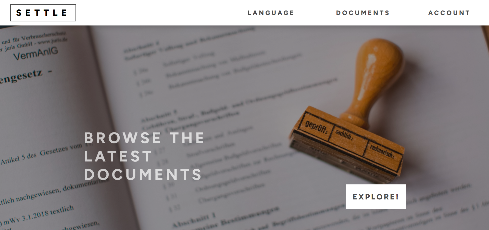

My name is Yassin and I'm a 22 year-old web developer from Cologne, Germany. I am interested in backend and mainly cloud driven architectures. My goal is to master the main AWS services and the cloud.
[esc] to close window
